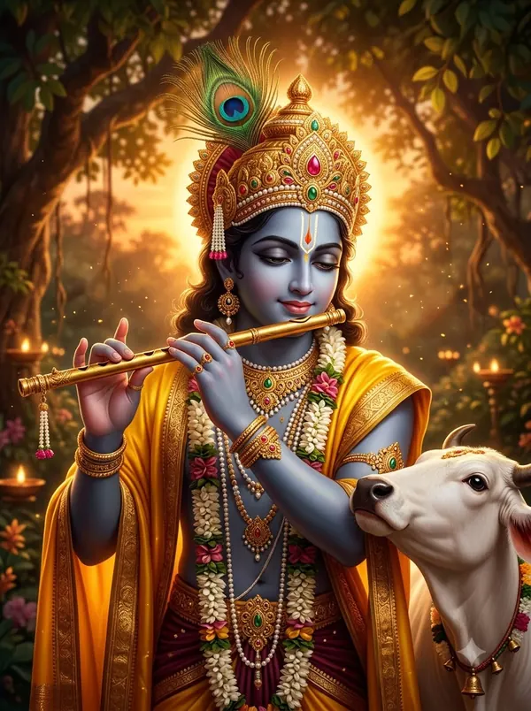

जगन्नाथ रथ यात्रा कब है?
जगन्नाथ रथ यात्रा 2027 में 5 जुलाई 2027, सोमवार को है। यह आषाढ़ मास के शुक्ल पक्ष की द्वितीया तिथि को सुबह से (उदया तिथि) मनाया जाता है।

जगन्नाथ रथ यात्रा: तारीख़ और समय
| साल | तारीख़ | तिथि (शुक्ल द्वितीया) | पूजा का समय (नई दिल्ली) |
|---|---|---|---|
| 2027 | 5 जुलाई 2027, सोमवार | सुबह 4:51, 5 जुलाई से रात 1:14, 6 जुलाई तक | सूर्योदय: सुबह 5:28 |
पुरी में भगवान जगन्नाथ, बलभद्र और सुभद्रा की रथ यात्रा। जिस दिन सूर्योदय के समय यह तिथि हो, उसी दिन त्योहार मनाया जाता है।
अक्सर पूछे जाने वाले सवाल
जगन्नाथ रथ यात्रा 2027 कब है?
जगन्नाथ रथ यात्रा 2027 में 5 जुलाई 2027, सोमवार को है। यह आषाढ़ मास के शुक्ल पक्ष की द्वितीया तिथि को सुबह से (उदया तिथि) मनाया जाता है।
जगन्नाथ रथ यात्रा किस तिथि को मनाया जाता है?
आषाढ़ मास, शुक्ल पक्ष, द्वितीया। जिस दिन सूर्योदय के समय यह तिथि हो, उसी दिन त्योहार मनाया जाता है।
जगन्नाथ रथ यात्रा का महत्व क्या है?
पुरी में भगवान जगन्नाथ, बलभद्र और सुभद्रा की रथ यात्रा।